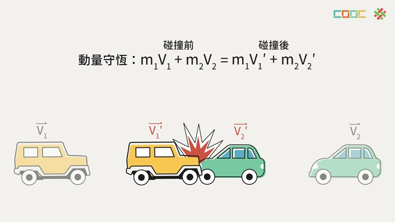
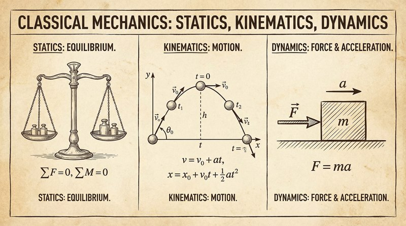

返回课程列表
第一课
绪论
通过赚钱理财理解理论力学
⏱️ 约30分钟
投资理财看似与力学无关，但风险与收益的平衡、资产配置的优化，处处都蕴含着力学的智慧。 就像力的分解与合成，投资也需要找到最佳的组合方式。
理论力学的研究对象
理论力学是研究物体机械运动一般规律的科学。机械运动是指物体在空间的位置随时间的变化， 是最基本、最简单的运动形式。从宏观的天体运行到微观的粒子运动，都属于理论力学的研究范畴。

理财中的「平衡」智慧
在投资理财中，风险与收益就像力学中的力一样，需要找到平衡点。资产配置的过程，本质上就是力的分解与合成。
- 资产配置 = 力的分解：将总资金分配到股票、债券、黄金等不同资产，就像将一个力分解到不同方向
- 风险对冲 = 力的平衡：用相反方向的投资抵消风险，如同作用力与反作用力
- 杠杆投资 = 力矩放大：用少量资金控制大量资产，类似杠杆原理
- 收益最大化 = 最优角度：找到风险与收益的最佳平衡点，就像抛射体找到最远射程的角度
理论力学的三大分支
理论力学包括三个主要部分：静力学研究力的平衡与物体平衡条件； 运动学研究运动的几何性质，不考虑力的因素；动力学研究力与运动的关系，是力学最核心的部分。

投资组合的「力学三要素」
理财策略可以用理论力学的三个分支来理解，每个分支对应投资的不同层面：
- 静力学 - 资产配置的平衡：各类资产比例保持稳定，就像结构力学中的平衡状态。股票涨多了就减仓，跌多了就加仓，维持动态平衡
- 运动学 - 价格走势分析：研究价格变动的轨迹和速度，不考虑背后的驱动因素，纯粹的技术分析
- 动力学 - 市场力量分析：研究影响价格的各种力量，包括基本面、资金流向、市场情绪等驱动因素